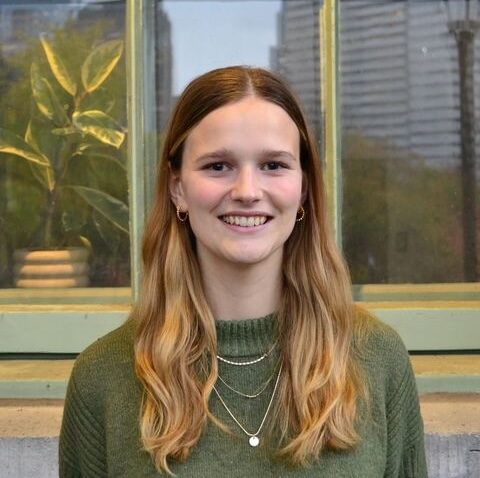
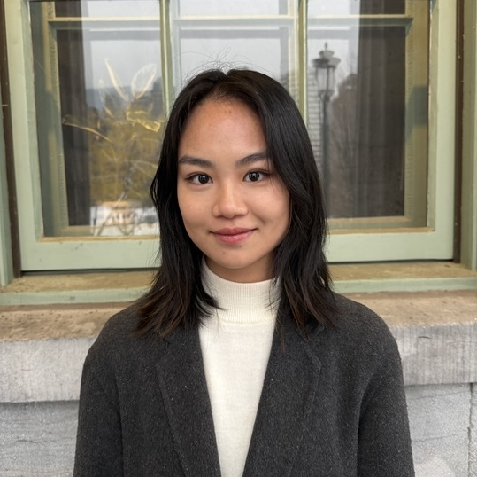
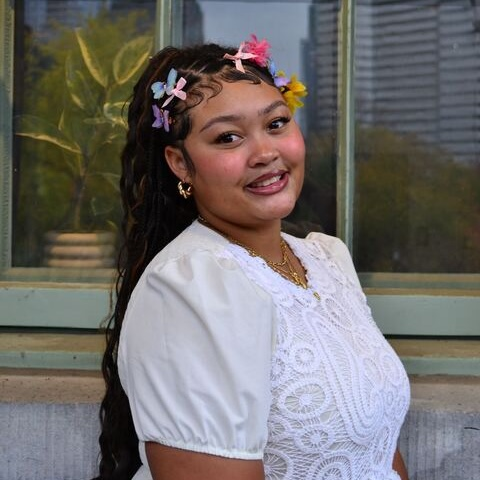
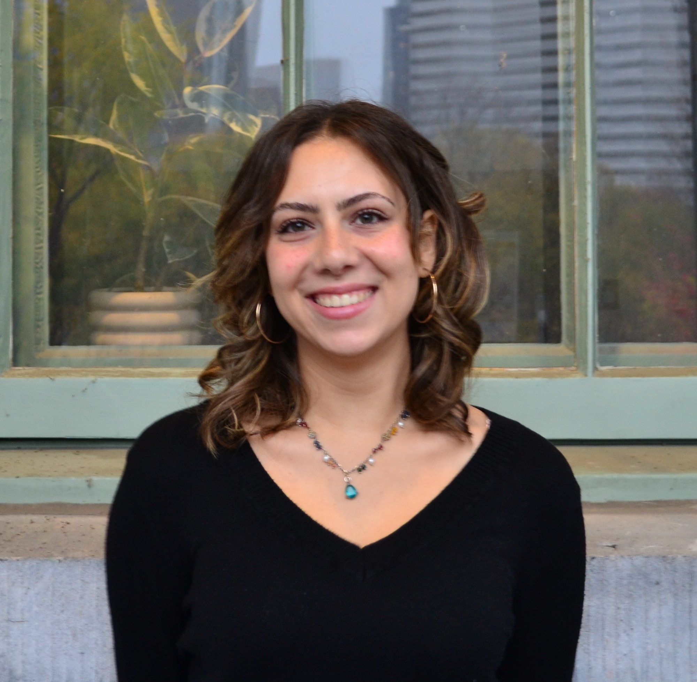

Zoe is in her final year at McGill, completing an Honours degree in Political Science with a minor in Linguistics. Her research interests centre on the politics of language and symbolism in East Central Europe. When she isn't busy, you'll find her working through her collection of Penguin Clothbound Classics.

Elisia is in her fourth year at McGill, completing a Joint Honours degree in English Literature and Political Science. Her research interests span feminist theory and rhetorical writing, political economy, and the politics of language. When she's not busy — a rare and treasured occasion — she makes a point of doing absolutely nothing. She is also known to many as the one who's constantly talking about being a figure skater.

Jôsi is in her final year at McGill, double majoring in Political Science and International Development Studies with a minor in Education. Her research interests focus on education policy and the inclusion of Black history in educational curricula. When she isn't busy, she loves cooking and baking.

Mariam is in her third year at McGill, completing an Honours degree in Political Science with a minor in Philosophy. Her research interests range from race and ethnic politics to political sociology. When she's not buried in course readings, she enjoys a good book and attempting new recipes.